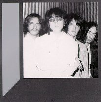

Articles
C.Q. Sessions
By Richard Groothuizen, summer 1994. Originally appeared on the "C.Q. Sessions"
CD Booklet [1994, Pseudonym Records, Holland]
Wally Tax - Still an Outsider
An interview by Mike Stax, summer 1987. Originally appeared on "Ugly Things"
#6
Review:
"Outsiders" CD (Pseudonym)
"Talk to me + 3" 7" EP (Beat Crazy)
"CQ (Complete Polydor Recordings)" CD (Pseudonym)
"CQ Sessions" 2 CD (Pseudonym)
By Mike Stax, 1995. Originally appeared on "Ugly Things" #14
The Outsiders' History
By Filippo Dulio, edited by Blair Buscareno. Originally appeared on "The
Teen Scene" #55, summer 1996
The Outsiders live at the Paradiso, Amsterdam:
October 10th, 1997
Report by Sander van Malssen
"Inside The Outsiders"
The Wally Tax Interview. By
Richie
Unterberger, October 1997. Originally appeared on "Ugly Things" #16
"Splinter!"
Ron Swart interviews Outsiders guitarist Ronnie Splinter. Originally appeared
on "Ugly Things" #16